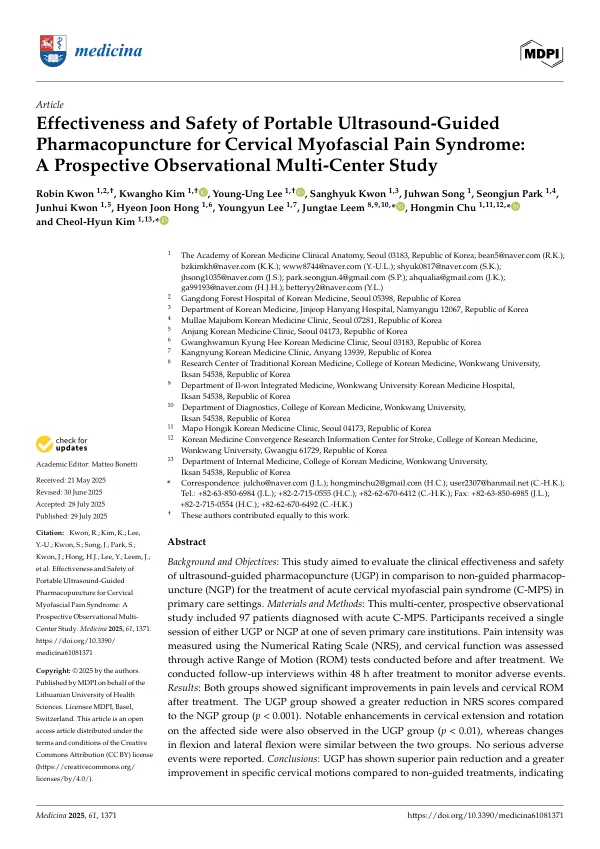

Effectiveness and Safety of Portable Ultrasound-Guided Pharmacopuncture for Cervical Myofascial Pain Syndrome: A Prospective Observational Multi-Center Study
Kwon R, Kim K, Lee YU, Kwon S, Song J, Park S, Kwon J, Hong HJ, Lee Y, Leem J, Chu H, Kim CH
Medicina 61(8):1371

첫 장 · 오픈액세스First page · open access
논문 소개Summary
약침을 놓을 때 초음파로 보고 놓는 것과 손으로 짚어 놓는 것이 실제로 다른 결과를 내는지 견준 연구입니다. 급성 경부 근막통증 증후군은 일차 의료에서 흔하지만, 근막 사이 공간을 겨냥하는 시술의 정확도를 임상 결과로 확인한 연구는 증례보고나 설문에 머물러 있었습니다.
한의 임상해부학회 소속 일곱 기관에서 진행한 다기관 전향 관찰연구입니다. 급성 경부 근막통증 환자 97명이 두판상근과 견갑거근, 상후거근이 만드는 근막 사이 공간에 자하거 약침을 한 차례 맞았습니다. 초음파 유도군은 시술자가 실시간 화면을 보며 놓았고, 비유도군은 촉진으로 위치를 잡은 뒤 화면을 보지 않고 놓았습니다. 두 군 모두 환자는 화면을 볼 수 없었습니다. 배정은 무작위가 아니라 기관 단위입니다. 원래는 기관마다 시기를 나눠 두 시술을 번갈아 하는 교차설계였는데, 임상시험 실시기관이 아닌 일차 한의원에서 무작위 배정 없이 임상시험을 닮은 설계를 쓰는 것은 적절하지 않다는 심의위원회 판단에 따라 바꾸었습니다.
참여자는 남성 42명과 여성 55명, 평균 42.91세였습니다. 숫자평가척도는 초음파 유도군에서 5.84에서 2.76으로, 비유도군에서 6.09에서 4.47로 내려갔고 시간과 군의 상호작용이 유의해 초음파 유도군의 감소폭이 더 컸습니다. 경추 가동범위에서는 신전과 환측 회전이 두 군 사이에 차이를 보였습니다.
차이가 없었던 것도 그대로 적어 둡니다. 굴곡과 환측 측굴은 두 군 모두 좋아졌지만 좋아진 정도는 다르지 않았습니다. 초음파 유도가 모든 방향의 움직임을 고르게 되살리지는 못한 셈입니다. 안전성에서는 97건 가운데 시술 당일 이상반응이 없었고, 다음 날 두통과 감기 유사 증상을 말한 한 사람은 시술과 관련이 낮다고 판단했습니다.
저자들이 밝힌 한계는 무겁습니다. 무작위 배정이 아니고 기관 단위로 군을 나누었으므로 선택과 수행의 비뚤림이 들어옵니다. 결과는 시술 48시간 안의 단기 지표뿐이라 오래 가는지 알 수 없습니다. 시술자의 초음파 숙련도 차이를 보정하지 않았고, 약침액도 한 종류만 쓰면서 조성과 농도를 표준화하지 않았습니다. 그래서 이 연구는 효과를 확정하는 자리가 아니라 무작위 대조시험을 설계하기 위한 바탕이라고 스스로를 규정합니다. 큰 병원의 고정형이 아니라 들고 다니는 초음파를 썼다는 점이 그 바탕의 값을 정합니다. 한의원 진료실에서 그대로 되풀이할 수 있는 조건에서 잰 숫자이기 때문입니다.
This study compared what actually happens when pharmacopuncture is delivered under ultrasound guidance rather than by palpation alone. Acute cervical myofascial pain syndrome is common in primary care, yet evidence on the accuracy of targeting the interfascial plane had not gone beyond case reports and surveys.
It is a multicentre prospective observational study across seven institutions belonging to the Academy of Korean Medicine Clinical Anatomy. Ninety-seven patients with acute cervical myofascial pain received a single session of Hominis Placenta pharmacopuncture into the interfascial space formed by the splenius capitis, levator scapulae and serratus posterior superior muscles. In the guided group the practitioner watched the ultrasound screen in real time; in the non-guided group the site was located by palpation and the injection given without viewing the image. Patients in both groups were prevented from seeing the screen. Allocation was by site, not randomisation. The original design was a crossover in which each institution alternated between the two procedures, but the review board judged it inappropriate for primary care clinics that are not registered trial sites to adopt a design resembling a randomised trial without random assignment, and the design was revised.
Participants were 42 men and 55 women with a mean age of 42.91 years. Numerical Rating Scale scores fell from 5.84 to 2.76 in the guided group and from 6.09 to 4.47 in the non-guided group, with a significant time-by-group interaction indicating the larger reduction under guidance. Among cervical range-of-motion measures, extension and rotation towards the affected side differed between groups.
What did not differ is recorded as plainly. Flexion and lateral flexion towards the affected side improved in both groups, but by a similar amount — ultrasound guidance did not restore every direction of movement equally. On safety, none of the 97 procedures produced an adverse event on the day of treatment; one patient reported headache and flu-like symptoms the following day, judged unlikely to be related.
The authors' stated limitations are weighty. Allocation was not randomised and was made at the level of the institution, admitting selection and performance bias. Outcomes extend only to short-term measures within 48 hours, so durability is unknown. Differences in operators' ultrasound proficiency were not adjusted for, and a single pharmacopuncture solution was used without standardising its composition or concentration. The study therefore defines itself not as settling efficacy but as groundwork for designing randomised controlled trials. What sets the value of that groundwork is the use of a portable ultrasound device rather than the fixed machines of large hospitals: these are numbers measured under conditions a Korean medicine clinic can reproduce exactly.
인용Cite
Kwon R, Kim K, Lee YU, Kwon S, Song J, Park S, Kwon J, Hong HJ, Lee Y, Leem J, Chu H, Kim CH. Effectiveness and Safety of Portable Ultrasound-Guided Pharmacopuncture for Cervical Myofascial Pain Syndrome: A Prospective Observational Multi-Center Study. Medicina. 2025;61(8):1371. doi:10.3390/medicina61081371